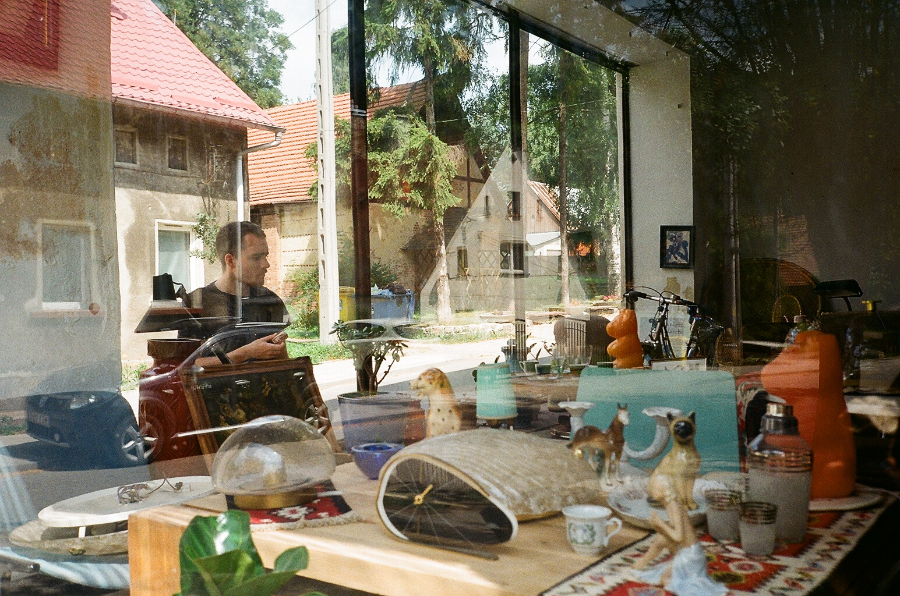

Pracownia architektoniczna realizująca pragmatyczne projekty wnętrz i budynków przy pogłębionej refleksji nad przestrzenią, ekologią oraz ekonomią rozwiązań budowlanych.

Pracownia mieści się w postindustrialnych przestrzeniach Fabryki Sztuki w Łodzi przy ulicy Tymienieckiego 3.